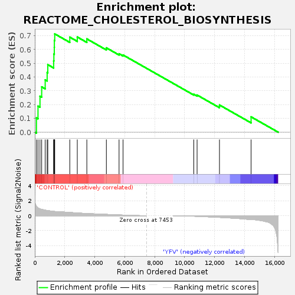
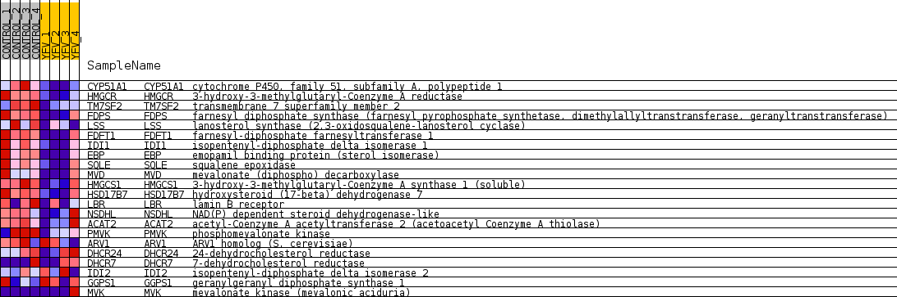
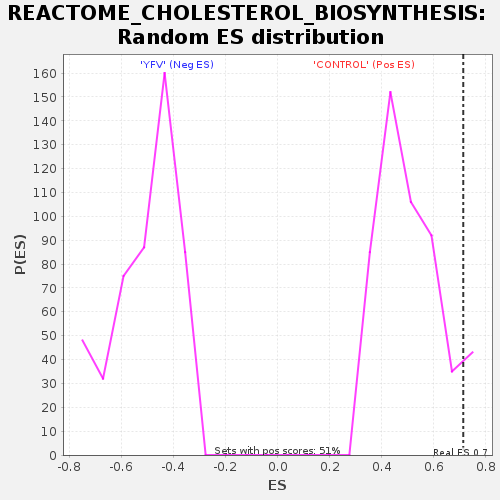

| Dataset | MATRIZ_GSE99081_collapsed_to_symbols.gsea_CLASE_99081.cls#CONTROL_versus_YFV |
| Phenotype | gsea_CLASE_99081.cls#CONTROL_versus_YFV |
| Upregulated in class | CONTROL |
| GeneSet | REACTOME_CHOLESTEROL_BIOSYNTHESIS |
| Enrichment Score (ES) | 0.7137283 |
| Normalized Enrichment Score (NES) | 1.3967998 |
| Nominal p-value | 0.06042885 |
| FDR q-value | 1.0 |
| FWER p-Value | 1.0 |

| SYMBOL | TITLE | RANK IN GENE LIST | RANK METRIC SCORE | RUNNING ES | CORE ENRICHMENT | |
|---|---|---|---|---|---|---|
| 1 | CYP51A1 | cytochrome P450, family 51, subfamily A, polypeptide 1 | 109 | 1.259 | 0.1037 | Yes |
| 2 | HMGCR | 3-hydroxy-3-methylglutaryl-Coenzyme A reductase | 213 | 1.046 | 0.1892 | Yes |
| 3 | TM7SF2 | transmembrane 7 superfamily member 2 | 346 | 0.914 | 0.2612 | Yes |
| 4 | FDPS | farnesyl diphosphate synthase (farnesyl pyrophosphate synthetase, dimethylallyltranstransferase, geranyltranstransferase) | 459 | 0.852 | 0.3291 | Yes |
| 5 | LSS | lanosterol synthase (2,3-oxidosqualene-lanosterol cyclase) | 693 | 0.744 | 0.3800 | Yes |
| 6 | FDFT1 | farnesyl-diphosphate farnesyltransferase 1 | 824 | 0.695 | 0.4329 | Yes |
| 7 | IDI1 | isopentenyl-diphosphate delta isomerase 1 | 867 | 0.683 | 0.4902 | Yes |
| 8 | EBP | emopamil binding protein (sterol isomerase) | 1257 | 0.582 | 0.5173 | Yes |
| 9 | SQLE | squalene epoxidase | 1273 | 0.578 | 0.5671 | Yes |
| 10 | MVD | mevalonate (diphospho) decarboxylase | 1300 | 0.573 | 0.6157 | Yes |
| 11 | HMGCS1 | 3-hydroxy-3-methylglutaryl-Coenzyme A synthase 1 (soluble) | 1305 | 0.571 | 0.6655 | Yes |
| 12 | HSD17B7 | hydroxysteroid (17-beta) dehydrogenase 7 | 1329 | 0.566 | 0.7137 | Yes |
| 13 | LBR | lamin B receptor | 2335 | 0.435 | 0.6899 | No |
| 14 | NSDHL | NAD(P) dependent steroid dehydrogenase-like | 2835 | 0.362 | 0.6910 | No |
| 15 | ACAT2 | acetyl-Coenzyme A acetyltransferase 2 (acetoacetyl Coenzyme A thiolase) | 3472 | 0.291 | 0.6773 | No |
| 16 | PMVK | phosphomevalonate kinase | 4776 | 0.177 | 0.6125 | No |
| 17 | ARV1 | ARV1 homolog (S. cerevisiae) | 5623 | 0.104 | 0.5694 | No |
| 18 | DHCR24 | 24-dehydrocholesterol reductase | 5890 | 0.085 | 0.5605 | No |
| 19 | DHCR7 | 7-dehydrocholesterol reductase | 10610 | -0.068 | 0.2755 | No |
| 20 | IDI2 | isopentenyl-diphosphate delta isomerase 2 | 10831 | -0.088 | 0.2696 | No |
| 21 | GGPS1 | geranylgeranyl diphosphate synthase 1 | 12325 | -0.226 | 0.1974 | No |
| 22 | MVK | mevalonate kinase (mevalonic aciduria) | 14435 | -0.500 | 0.1112 | No |

